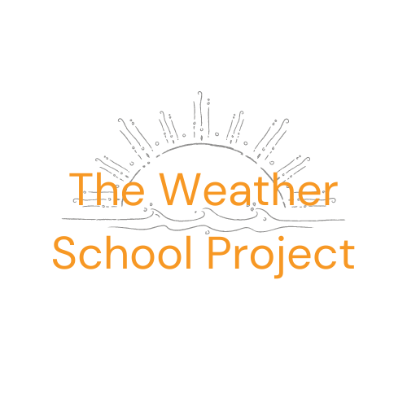
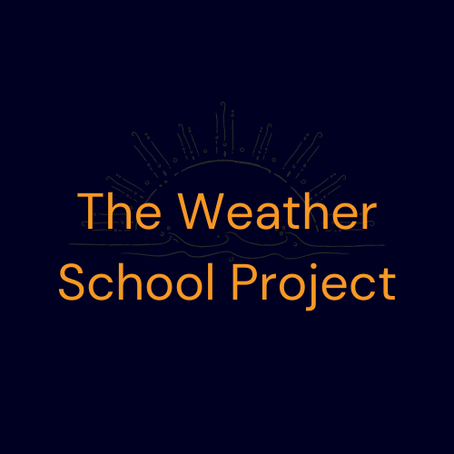
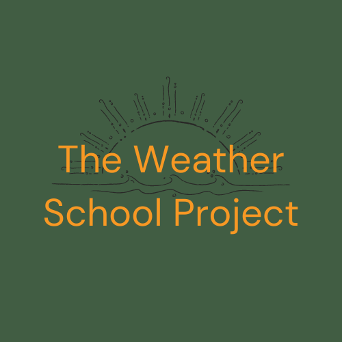
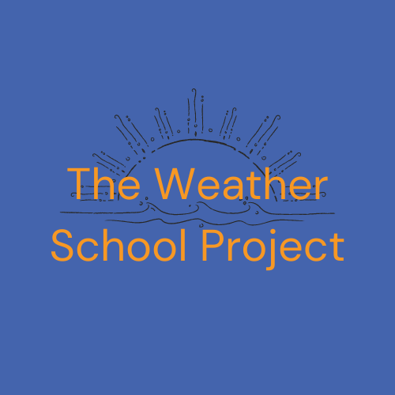

Site Purpose
The Weather School Project is designed with elementary aged students in mind. Elementary students will be able to navigate The Weather School Project website with ease as they learn about weather in south-east Idaho, more specifically the towns of Preston, Idaho, Soda Springs, Idaho, and Fish Haven, Idaho.
Teacher's will have access to an easy to navigate website that allows students the information needed to complete weather units in elementary school including a gallery of weather images in the specified three towns, a storm center page that focuses on storms in the area and a home page with a current weather story with image along with current weather for Preston, Soda Springs and Fish Haven.
The site will have responsive design techniques that will allow students, parents and teachers the ability to view the site well from any device. This will make it easier to complete assignments on the go, at home or on any device available to the student.
Domain Name
The domain name that I have selected is weatherschoolproject.com. It is available for $12 a year.
The Weather School Project Logo
$ logo versions with different combinations of The Weather School Project colors.
   